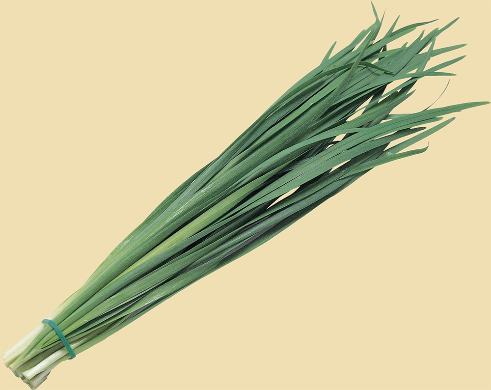

Морковь – это полезный овощ, разведением которого занимаются все огородники. Больше всего, конечно, ценятся ее съедобные корни. Они очень богаты витамином А. Морковка идеально подходит для изготовления салатов, также для консервов на зиму. Выращивать морковку лучше у себя на огороде, не покупая ее в магазине, потому что тогда вы будете уверены в том, что там нет химических добавок.

Лук известен человечеству с незапамятных времен. Уже более 5000 лет люди в большинстве стран используют этот уникальный по своим свойствам овощ. Родиной лука общепризнанно считается Средняя Азия и Афганистан. Самый привычный для нас зеленый лук – это наземная часть лука репчатого. В дикой природе репчатый лук до сих пор не обнаружен. Это обстоятельство позволяет сделать вывод, что лук полностью культурное растение, которое было получено путем селекции.

Помидор – название растения и одноименных плодов. Название «помидор» в переводе с итальянского обозначает - золотое яблоко, а слово томат произошло от ацтекского «матль». Родиной помидор является Южная и Центральна Америка, где до сих пор можно повстречать дикие формы этой культуры. Вместе с картофелем, кукурузой и другими растениями томаты были привезены с Европу испанскими завоевателями. Долгое время помидоры выращивали как декоративное растение, а его плоды считались несъедобными и даже ядовитыми. А в настоящее время томаты по праву считаются одной из самых популярных культур, выращиваемых в большинстве стран мира.
Огурец почти на 95 процентов состоит из структурированной – «живой» воды. Он великолепно утоляет жажду. Остальные 5-6 процентов – кладезь витаминов и полезных минералов. Например, витамина В2 в огурце содержится намного больше, чем в редисе. Кроме того, огурец богат йодом (более прочих овощных культур) и витамином В1. А еще в составе огурцов содержится глюкоза, фруктоза, крахмал, аскорбиновая кислота, витамины Е, A, C, PP, H, каротин, кофейная и фолиевая кислоты, хлорофилл, калий, кальций, фосфор, магний, железо, натрий, хром, кремний, хлор, кобальт, цирконий, марганец, никель, медь, цинк, алюминий, свинец, серебро, титан. Вот так! Вот вам и огурчик – вся таблица Менделеева.
Кабачок (лат. сucurbita pepo var. Giromontina) - это травянистое растение семейства тыквенные, с крупными желтовато-зеленым плодами продолговатой формы. Его считают одной из разновидностей тыквы обыкновенной. Кабачок — растение многолетнее, однако в районах с умеренным климатом его выращивают как однолетник